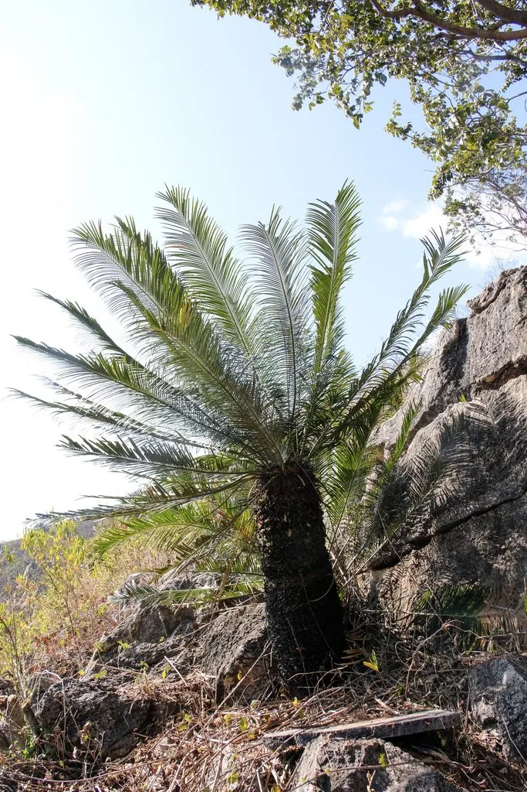

蕨类与裸子植物 · 植物界
攀枝花苏铁 Cycas panzhihuaensis

攀枝花苏铁是中国特有的苏铁，发现于四川攀枝花，耐干热河谷环境，被列为国家一级重点保护野生植物。
- 分类
- 门裸子植物门纲苏铁纲目苏铁目科苏铁科属苏铁属
- 栖息环境
- 金沙江干热河谷的石灰岩山坡灌丛，喜干热、光照充足
- 地理分布
- 中国四川攀枝花、云南北部金沙江干热河谷，中国特有种
- 保护级别
- IUCN 暂无评估；中国国家一级重点保护野生植物
物种志
攀枝花苏铁是苏铁科常绿植物，茎干高 1–3 m，常丛生，表面有叶痕。羽状叶长 1–2 m，小叶线形、坚硬，深绿色。雌雄异株：雄球花圆柱形、直立，雌球花扁圆，种子近球形，成熟时橙红色。它的形态与苏铁相似，但更适合干热环境。
攀枝花苏铁是中国特有种，仅分布于四川攀枝花、云南北部金沙江干热河谷一带，生境特殊，多生于石灰岩山坡的灌木丛中。它喜干热、光照充足的环境，耐旱、耐瘠薄，生长缓慢。苏铁类对研究种子植物演化有重要价值，攀枝花苏铁因分布区狭小、种群数量少而格外珍稀，被列为中国国家一级重点保护野生植物。当地建立了自然保护区，对它进行就地保护与人工繁育。
形态与习性
- 茎干高 1–3 m，常丛生
- 叶羽状复叶，长 1–2 m
- 雌雄异株
- 生境干热河谷石灰岩山坡
- 保护国家一级重点保护野生植物
趣味知识
- 攀枝花苏铁因发现于四川攀枝花而得名，是中国特有种。
- 它生长在金沙江干热河谷，耐旱耐热，生境十分特殊。
- 攀枝花苏铁被列为国家一级保护野生植物，并建立了自然保护区。